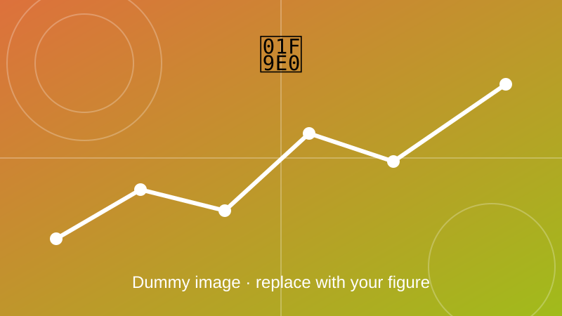

AI-Based Charging Power Prediction
Deep learning models that predict EV charging power directly from battery State-of-Charge.

Overview
Deep learning models (LSTM and hybrid machine learning approaches) were developed to predict active and reactive charging power directly from battery State-of-Charge (SOC). Automated preprocessing, feature engineering and inference pipelines were built using Python and TensorFlow.
Objectives
- Predict active and reactive charging power from SOC.
- Automate preprocessing and feature engineering.
- Package the model as a repeatable inference pipeline.
Method and key equations
Charging data is cleaned, scaled and cut into time windows. An LSTM network reads each window and outputs the predicted power, and training minimises the prediction error.
LSTM forget gate: decides how much of the old memory to keep, from the previous output \(h_{t-1}\) and the current input \(x_t\).
Cell-state update, mixing old memory with new information through the input gate \(i_t\).
Mean squared error between measured power \(P_n\) and predicted power \(\hat{P}_n\), used for training.
Reactive power from active power \(P\) and power factor \(\phi\).
Outcome
Add your results here: key findings, figures, and links to the related paper or code.